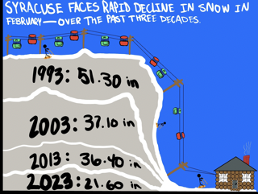

Subhed here
A new study of the weather patterns by a Syracuse University broadcasting and digital journalism student reveals a rapid decline in snow fall during the month of February, over the past four decades. I, Michael Lamorte, condensed data provided by extremeweather.com, to create the bellow charts. I choose to utilize a line chart as it clearly shows the decrease of snowfall in inches and its respected year. I later created a dataviz chart, related to the basic line chart. I first sketched the chart on paper, then digitalized it. I wanted to make a chart that was, well, fun to look at-- enjoyable for the viewer-- while also being informative. the chart contains 4 decades worth of snow on a ski resort. there are lines separating within the snow to emphasize the difference in snowfall inches over the past four decades, and the viewer can see the 2023 snow hill is much smaller than the 1993 snow hill.
The next time I make edits for either chart, I will focus on making information more concise and accurate. I also will seek to fix the dates on the I frame to display February insted of "Jan 1, ####". for the dataviz, I plan to re-render the image to make it clearer.
